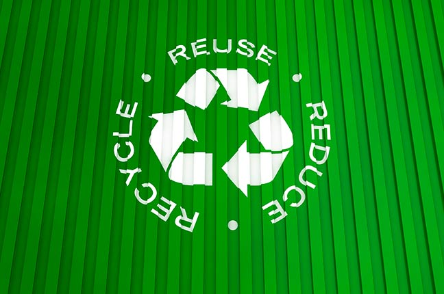
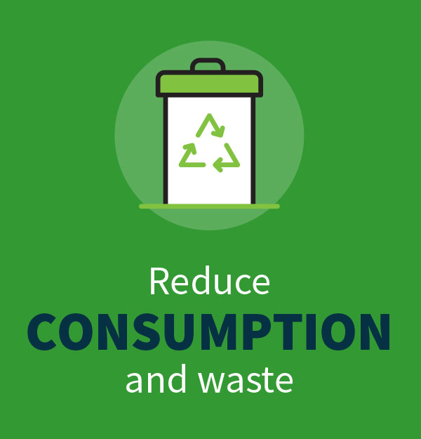
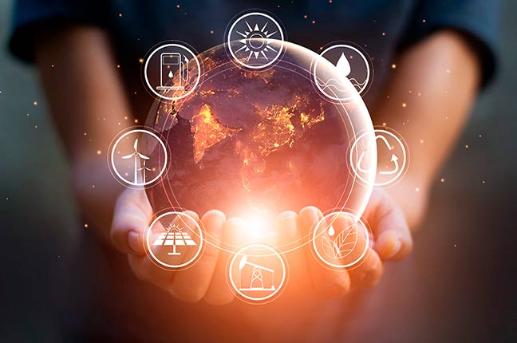

Conscious consumption encourages reflection on our choices and habits, promoting greater awareness of what we really need and the impact of our decisions on the world. 🍃
Reduce, Reuse and Recycle.
Reduce consumption as much as possible, reuse products and materials for as long as they can be reused and, finally, recycle those that have reached the end of their useful life.
By following these practices, it is possible to lower the cost of living by reducing expenses, especially in the industrial sector, as well as promoting global sustainable development and helping to reverse the negative impacts caused on nature.

sustainable
Reduce
Reducing consists of actions that reduce the consumption of goods and services, aiming to reduce the generation of waste and consequently reduce waste.
Reduction should encompass both the use of products and the rationing of resources such as water, energy and fuel, practices that have a positive impact on the economy and are reflected in minimizing the damage caused by waste generation and environmental pollution.
Here, the aim of “reduction” is to purchase goods and services according to real consumption needs in order to avoid waste, saving energy, water, food and fuel, always paying attention to the conscious use of these resources.

sustainable
Reuse
Reuse contributes significantly to saving renewable resources used to manufacture more and more consumer goods, because when we reuse a product, we simply give it more time to be used, extending its useful life.
The aim of this R of sustainability is to reuse everything that can be reused, giving a new purpose to a product that would otherwise be thrown away.
This practice helps to reduce the amount of raw materials, energy and water needed to manufacture new products, drastically reducing the disposal of consumer goods and consequent pollution of the environment.

sustainable
Recycling
Recycling involves the processing of materials through their physical or chemical transformation, usually into raw materials for the production of new products and consumer goods.
A recyclable product must be disposed of correctly for selective collection, which will take care of sending the materials to the right places.
Recycling is a process that is also part of the circular economy, a sustainable development model that aims to reintegrate any and all materials into the production and consumption chain.